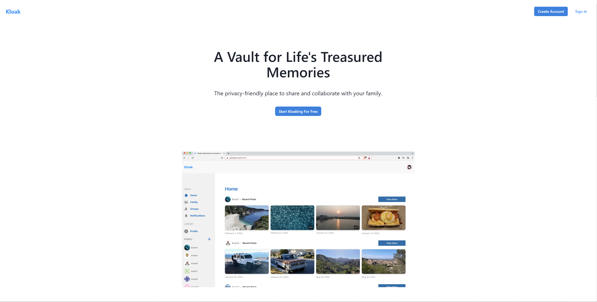
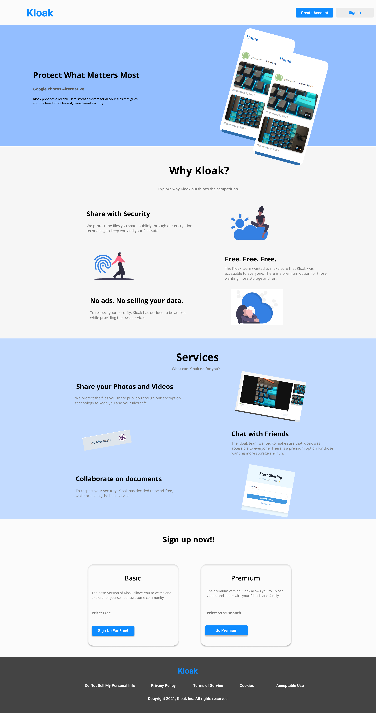

When I was working at Kloak, there was a huge discussion about how we can captivate our audience based on first glance, but it seemed out design was a bit too plain.
The new design adds more color and vibrance to the astheitic and it was something that we were playing around with while I was there. Alhtough the design iteself was very elementary we were hoping to captivate the audience.
